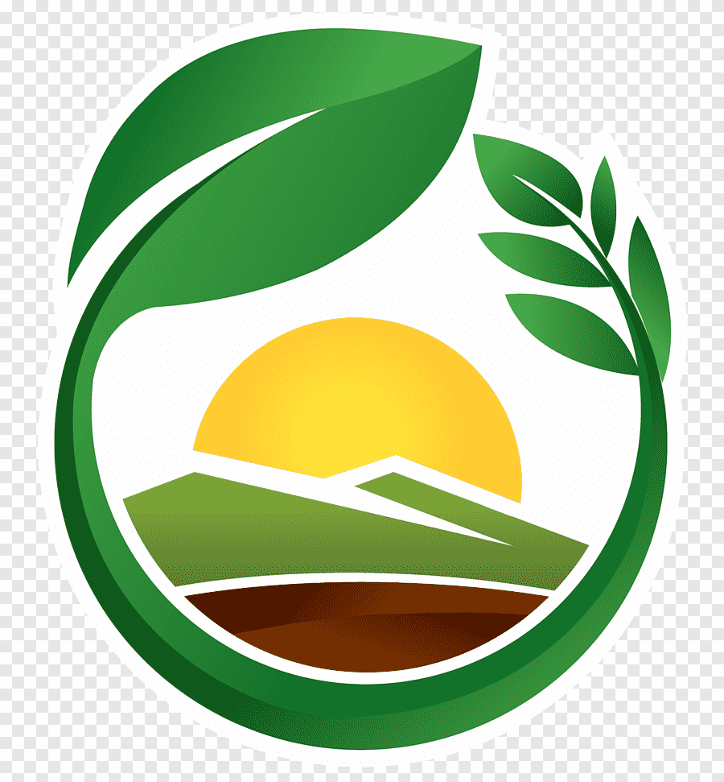

Entre o campo a cidade; coneccções que transformam

Entre o campo e a cidade a uma dependẽncia um do outro. O campo abastece a cidade com produtos alimentações e produtos, e a cidade devolve o produto estilizado ou seja melhorado, sendo desse jeito uma corrente.